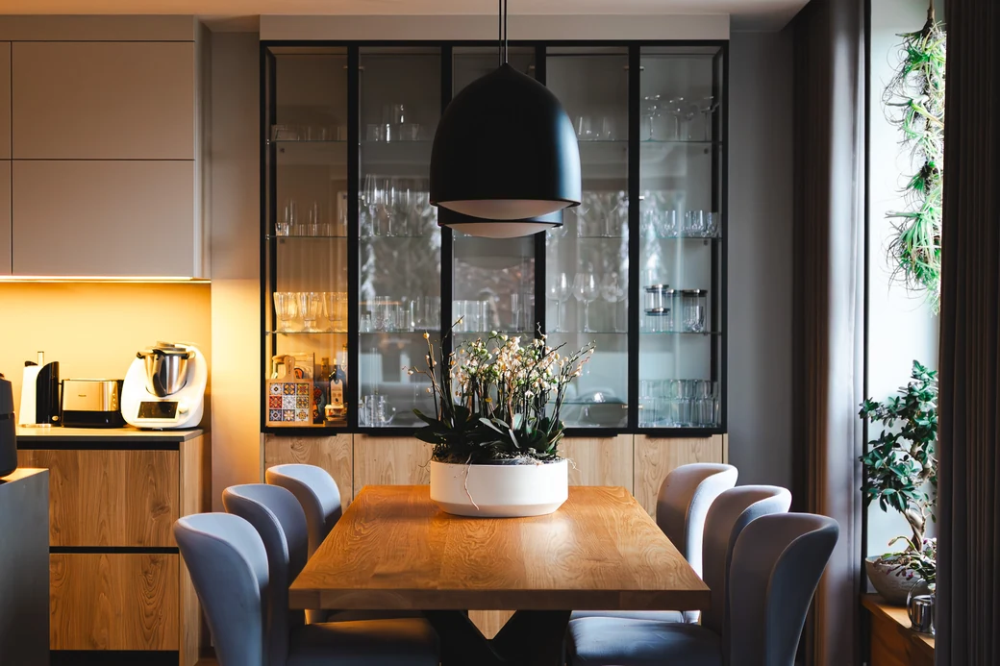

ApartamentPROJEKT I WYKOŃCZENIE POD KLUCZ MIESZKANIA W WARSZAWIE
CEL: Więcej przestrzeni.
POTRZEBA: przenikająca się przestrzeń do życia i więcej miejsca do przechowywania.
EFEKT: kuchnia, jadalnia i salon tworzą połączone strefy. Wyraziste kolory oddają charakter właścicielki. A całe przechowywanie zmieściliśmy w dużej garderobie.
CO ZDJĘLIŚMY Z GŁOWY WŁAŚCICIELCE?
WSZYSTKO!
Projekt, wyceny, organizację zamówień i dostaw, nadzór i koordynację remontu.
OPINIA KLIENTKI
Najbardziej zachwyciło mnie we współpracy z Pogotowiem wnętrzarskim to, że zdecydowałam tylko o tym co mi sie podoba a co nie, a nie musiałam robić doktoratu na temat różnych technicznych rzeczy. Warto zaufać projektantce, bo gdybym zaufała sobie to nie wymyśliłabym polowy rzeczy, którymi sie teraz ciesze.